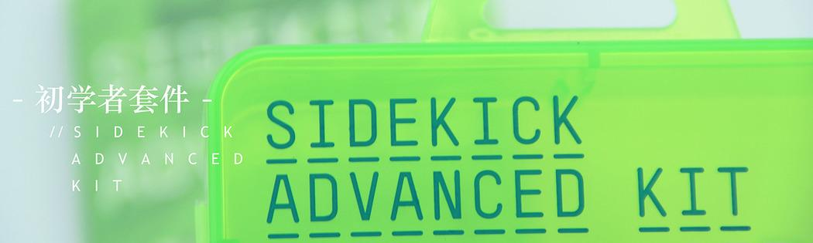
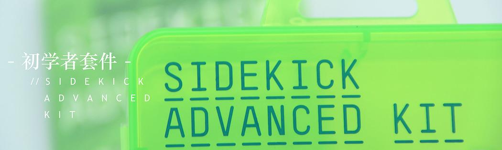

Here we will talk about how to use LinkIt ONE
Let's build a simple circuit using a transistor, LED and a toggle switch. Light Emitting Diode (LED) transforms electrical energy into visible light. Transistor is a fundamental component in electronics which acts as a switch or a current amplifier. Here, we use a switch to ON and OFF the LED indirectly using the transistor.
Click here to see the full tutorial.
In the previous section we've got an insight about how to control an LED with electronic components but lets do some gimmicks with software for automatic control of the LED. You just have to upload the code that is available in this section. The code written initially switches ON the LED, after a delay of 3sec it switches it OFF. Lets start using the LinkIt board.
Click here to see the full tutorial.
We now got an insight of how a software and hardware works from the previous chapter. In this chapter we will learn how to integrate both software and hardware for the control of the LED. Make breadboard connections as shown in the Fig 3.2 and upload the code. Now this circuit operates as a two way switch when you press the left side push button switch the LED glows and when the right side push button is pressed the LED is switched OFF.
Click here to see the full tutorial.
The experiments in the previous sections used only one LED but to show dazzling light effects lets use three LEDs. Make connections as shown in the Fig 4.2 and upload the code given below and observe the changes that happens.
Click here to see the full tutorial.
We now know how to control the LED's lets combine it with basic idea about combining colors. The R-Red G-Green B-Blue are the primary colors these colors when mixed in different proportion gives different colors. An RGB LED consists of four pins the long lead is the positive terminal and the other three lead are for controlling RGB colors. Make connections as shown in the Fig5.2 and upload the code.
Click here to see the full tutorial.
In the previous sections, we learned how to control the circuit's input and output using digital interface. In this section, we will learn how to vary the output using an analog device called a potentiometer (also known as a variable resistor). A potentiometer is used to vary the voltage in the range of 0 ~ 5V. The MPU reads the voltage value in the range of 0-1023.This can be used to control the brightness of the LED (PWM simulation output interface). If the potentiometer is turned clockwise, the LED brightens gradually. If it is rotated anticlockwise, the luminosity fades.
Click here to see the full tutorial.
Servo motor (servo) is commonly used in small robots and other machines to control angular position. It is wrapped by a small gear box, and positioned by the timing control pulses. In this section we control the angular position of the mini servo with the help of potentiometer.
Click here to see the full tutorial.
It's time to know about new sensors that could make our projects even more interesting. A photoresistor (light dependent resistor or photocell) is a light sensor which varies its resistance value based on the intensity of the ambient light. A buzzer is a electro-acoustic device used to generate standard tone when it is connected to the power supply. Lets use both these components in our experiments.
Click here to see the full tutorial.
In this section, we achieve some cool function. Outstanding characteristic of LinkIt One is integrated with the communication module. We are following through GSM communication module to transmit messages, the switch state to pass to change LED. This will be exciting. First connect with the antenna, and then insert a SIMCARD into the slot of the LinkIt One, then according to the schematic connected circuit. Use a mobile phone with GSM, edit the message content ON or OFF, send the specified number (the SIM number), now you can control the LED switch state, And global synchronization.
Click here to see the full tutorial.
LinkIt One with Wi-Fi communication function. We have collected some data through the LinkIt One. As the Internet AP to support data access by providing Web Server. Access to the corresponding IP address can get the data with browser. Next step you need to connect circuit, data acquisition from temperature sensor. Then well equipped with Wi-Fi antennas you and connected to the network, please have a choise with the network fill in the three parameters, the network name (WiFi_AP), access password (WIFI_PASSWORD), and transmission mode of router (options LWIFI_OPEN, LWIFI_WPA, LWIFI_WEP). Finally, the code is uploaded to the LinkIt One. Use of terminal device with network, open the browser and enter the IP address will obtain the temperature data. (Visit the IP address assignment via DHCP router access)
Click here to see the full tutorial.